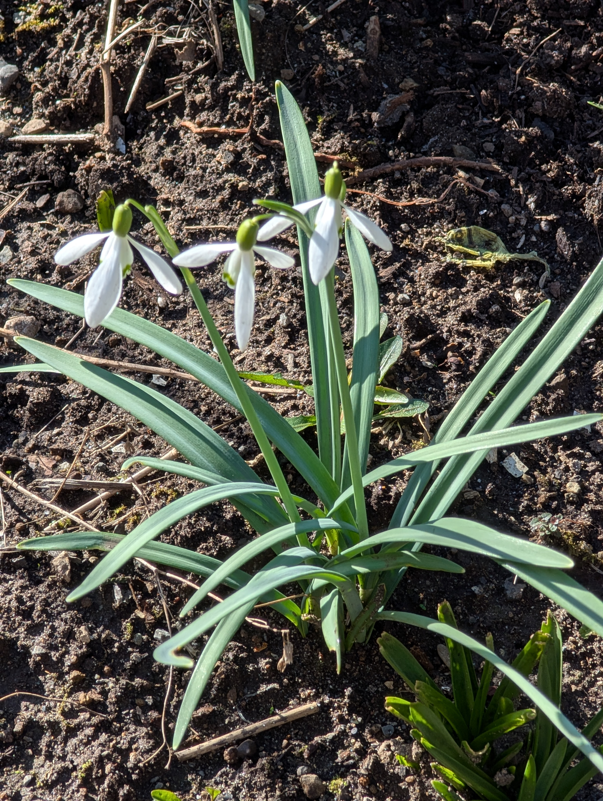
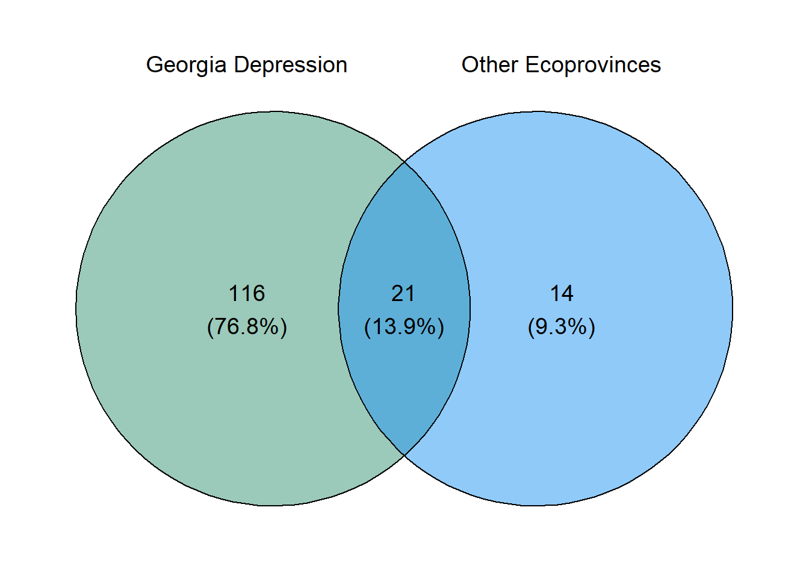
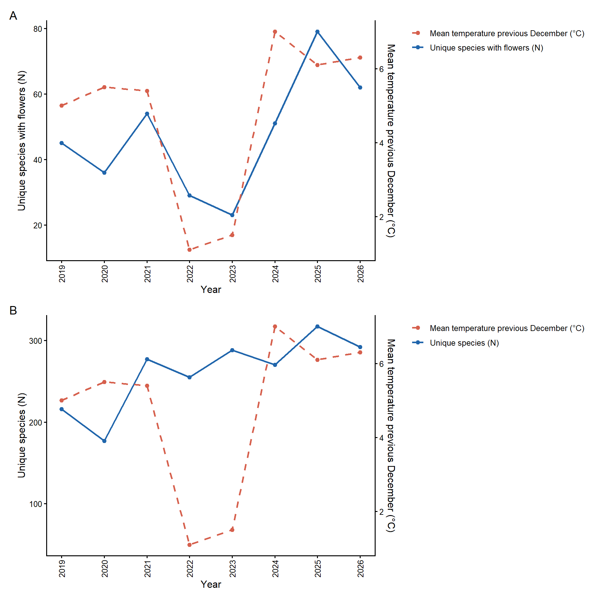
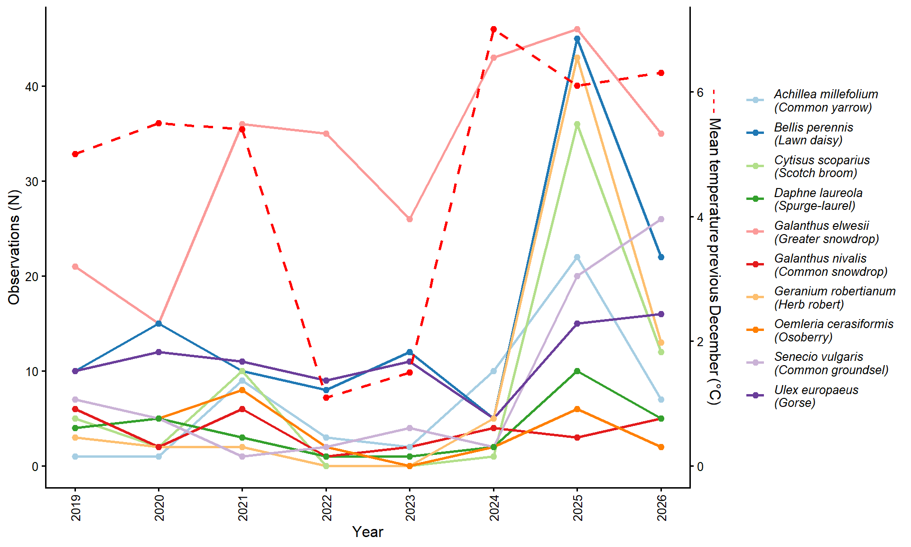

Year | Observations |
|---|---|
2019 | 2,515 |
2020 | 1,783 |
2021 | 3,618 |
2022 | 2,715 |
2023 | 4,411 |
2024 | 3,343 |
2025 | 4,847 |
2026 | 3,572 |
Winter flowers
news
phenology
Reading time: 15 minutes
Flowers in January
First published in The Buzz
Newsletter of the Native Bee Society of British Columbia April 2026, Volume 7 | Issue 1

Many in Southwestern BC are finding recent winters warmer and drier than in the past, with spring flowers blooming in January that typically wouldn’t appear for another month or two. In recent years, citizen scientists have been contributing an abundance of data in the public domain using various apps designed to document nature. This crowd-sourced data lets us take stock of changes in ecology, climate, and plant phenology - the study of plant life cycles and how environmental factors may influence them.
Temperature is a well established driver of flowering time in Spring, with many studies showing warming-induced shifts in phenology toward earlier flowering start, as well as later cessation of flowering, and longer flowering duration (Menzel et al, 2006; Dawson-Glass, 2025; A.G. Aufrett, 2021; Büntgen et al, 2022; Parmesan and Yohe, 2023). Additionally, mean temperatures in the month before blooming have been shown to influence timing of early spring flowering (Fitter and Fitter, 2002). The annual New year Plant Hunt in the UK (press release) has now shown that for every 1 °C rise in temperature in the months prior to the plant hunt, an average of 2.5 additional species are in bloom on January 1 (Met Office, 2026).
In Canada, one of the earliest crowd-sourced data analyses of first-bloom-day utilized records from PlantWatch Canada ‘Citizen Science’ networks from 2001-2012 (Gonsamo et al., 2013). These authors found blooming advanced by about 9 days over a 12 year period in 19 plant species, which correlated with 1 °C of warming; unfortunately, no records were available for BC.
With this as inspiration, we went to iNaturalist for crowd-sourced plant observations in our region to see what we could find out about early flowering patterns here.
Data sources
A dataset was constructed of plants that flower in January in BC as documented in iNaturalist with associated ecoregion, and weather data. This was done in 4 steps:
- Download of flowering plants (search terms Angiospermae, research grade) observations in BC, in January from iNaturalist (N=27,057, exported 14 Feb, 2026).
- Extraction of images from the dataset followed by Image sorting with Pl@ntNet to enable labelling of those ‘with’ and ‘without’ flowers. Photos of plants labelled ‘with’ flowers were manually examined to remove incorrect assignments.
- Data was merged with Ecoregion Ecosystem and Biogeoclimatic Ecosystem data from the BC data catalogue based on latitude and longitude of plant observations.
- Vancouver, BC weather data from weatherstats.ca was incorporated into the analyses.
What we found
January flowers in BC
The plant dataset contained 27,057 total observations (1980 to 2026). Very few observations were collected before 2019 (N=253) with annual counts ranging from 1 to 69. Because observations were sparse prior to 2019, the analyses were restricted to 2019 to 2026 (N=26,804; Table 1). Note that there may be additional observations added after our iNaturalist download date, particularly for January 2026.
Table 1. iNaturalist observations of plants in January in BC
Plants were documented in 8 of BC’s 9 ecoprovinces, with the vast majority of observations (95%) from the Georgia Depression; the most temperate and populated region of the province. Plants in bloom were documented in 6 ecoprovinces (Fig 1, Table 2).
Figure 1. Ecoprovinces of BC
Table 2. iNaturalist observations of plants in January in BC in different regions of BC
Ecoprovince | Total Observations | Not blooming | Blooming |
|---|---|---|---|
GEORGIA DEPRESSION | 23,957 | 22,592 | 1,365 |
COAST AND MOUNTAINS | 1,548 | 1,504 | 44 |
SOUTHERN INTERIOR | 849 | 836 | 13 |
SOUTHERN INTERIOR MOUNTAINS | 346 | 341 | 5 |
SUB-BOREAL INTERIOR | 36 | 36 | 0 |
BOREAL PLAINS | 31 | 31 | 0 |
CENTRAL INTERIOR | 31 | 29 | 2 |
NORTHERN BOREAL MOUNTAINS | 4 | 3 | 1 |
Total | 26,802 | 25,372 | 1,430 |
Note: location information obscured for 2 observations
Between 2019 and 2026, 690 plant species were observed in January; of these, 151 (21.9%) were observed in bloom at least once. The annual number ranged from a low of 186 species (36 in bloom) in 2020 to a high of 412 species (79 in bloom) in 2025. The percentage of plants in bloom ranged from a low of 6.8% in 2023 to a high of 19.4% in 2020.
Of those in bloom in January, 116 species were unique to the Georgia Depression, 14 species were unique to the other ecoprovinces combined, and 21 species were found in the Georgia Depression and one or more other ecoprovinces (Fig 2, Table 3).
Figure 2. Regional distribution of plants in bloom in January 2019-2026

Table 3. Lists of plants in bloom in January in different regions of BC 2019-2026
Ecoprovince | Common Name |
|---|---|
CENTRAL INTERIOR | Ghost pipe, Lodgepole pine dwarf-mistletoe |
COAST AND MOUNTAINS | Annual fleabane, Candy flower, Cascade beardtongue, Common groundsel, Common selfheal, Common snowdrop, Creeping buttercup, Evergreen huckleberry, Gorse, Herb robert, Lawn daisy, Lesser periwinkle, Meadow buttercup, Pearly everlasting, Pink mountainheath, Ragwort, Salal, Salmonberry, Scotch broom, Slender hook-lobed dandelion, Spotted knapweed, Western fairy-slipper, Western sweet coltsfoot, Winter jasmine |
GEORGIA DEPRESSION | American witch-hazel, Annual fleabane, Annual meadow-grass, Arbutus, Armenian blackberry, Beach knotweed, Beach strawberry, Beaked hazelnut, Bear’s-foot sanicle, Bearberry, Bifid hemp-nettle, Bird's-eye speedwell, Bloody crane's-bill, Borage, Broad-leaved helleborine, Bull thistle, California poppy, Candy flower, Cherry-plum, Common cat's-ear, Common centaury, Common chickweed, Common dandelion, Common gaillardia, Common grape hyacinth, Common groundsel, Common hazel, Common hedge parsley, Common ivy, Common mallow, Common ramping-fumitory, Common selfheal, Common snowberry, Common snowdrop, Common sow-thistle, Common vetch, Common viper's bugloss, Common whitlowgrass, Common yarrow, Cornflower, Cottonbatting plant, Creeping buttercup, Cutleaf deadnettle, Dutch yellow crocus, Eggleaf spurge, Eurasian sweet violet, European holly, European searocket, European spindle tree, Evergreen huckleberry, Feverfew, Field madder, Field mustard, Fireweed, Foothill desert-parsley, Gorse, Greater periwinkle, Greater snowdrop, Green alkanet, Green snowdrop, Hairy bittercress, Hairy manzanita, Hardhack, Heath speedwell, Henderson's shooting star, Herb robert, Horseweed, Ivy-leaved toadflax, Laurustinus viburnum, Lawn daisy, Lesser periwinkle, Nipplewort, Old man's beard, Orchard grass, Oregon grape, Oregon gumplant, Osoberry, Oxeye daisy, Pacific bleeding heart, Peach-leaved bellflower, Pearly everlasting, Perennial cornflower, Petty spurge, Pleated snowdrop, Pot marigold, Prickly sowthistle, Purple rock cress, Ragwort, Red-flowering currant, Red alder, Red campion, Red clover, Red deadnettle, Red huckleberry, Red valerian, Redstem stork's-bill, Rose-of-sharon, Rose campion, Rustyhair saxifrage, Salal, Salmonberry, Satinflower, Scentless mayweed, Scotch broom, Sea thrift, Seablush, Shepherd's-purse, Shepherd's cress, Small-flowered blue-eyed mary, Small camas, Snapdragon, Spotted knapweed, Spotted lady's thumb, Spurge-laurel, Staghorn sumac, Summer snowflake, Sweet alyssum, Tansy, Threeleaf foamflower, Trailing bellflower, Trailing blackberry, Western skunk cabbage, Western sweet coltsfoot, White campion, White clover, White sweet-clover, Wild carrot, Wild radish, Wingstem monkeyflower, Winter aconite, Winter honeysuckle, Winter jasmine, Woodland crocus, Woodland madia, Woolly yarrow |
NORTHERN BOREAL MOUNTAINS | Yukon bellflower |
SOUTHERN INTERIOR | Alfalfa, Arrowleaf senecio, Common yarrow, Rubber rabbitbrush, Sagebrush buttercup, Smooth sumac |
SOUTHERN INTERIOR MOUNTAINS | Common dandelion, Common groundsel, Lodgepole pine dwarf-mistletoe, Meadow hawkweed |
Effects of winter temperatures on January blooming
For these analyses, we restricted the dataset to observations in the Georgia Depression and used temperature data for Vancouver to represent weather trends in this region.
Plant observations collected in January of any given year may vary for a number of reasons such as weather conditions that deter people from getting outdoors as much, whether or not there’s snow on the ground hiding plants from view, and the ability of the observer to identify dormant plants. There was variability in the number of observations made year-to-year, but no apparent link with December or January temperatures.
Using a similar approach to that used in the analysis of the UK Plant Hunt data, we looked at previous mean December temperatures in the context of January blooming. We found mean December temperatures over the study period ranged from a low of 1.1 °C in 2021 to a high of 7 °C in 2023, with the number of observations of plant species in bloom in January peaking in 2025 (Table 4).
Table 4. Number of observations of plant species in bloom in January and winter temperatures - Georgia Depression 2019-2025
Year | Observations (N) | Mean previous Dec temperature (oC) |
|---|---|---|
2019 | 139 | 5.0 |
2020 | 96 | 5.5 |
2021 | 170 | 5.4 |
2022 | 93 | 1.1 |
2023 | 75 | 1.5 |
2024 | 135 | 7.0 |
2025 | 403 | 6.1 |
2026 | 254 | 6.3 |
The extent of blooming followed December temperature fluctuations from year-to-year (Fig 3). Years with warmer mean temperatures in December generally resulted in greater numbers of species in bloom in January than years with cooler Decembers (Fig 3A). However, other factors clearly come into play as the number of observations of plants and the number of species in bloom peaked in 2025 when winter conditions in December 2024 (mean temperature 6.1 °C) and in January 2025 (no snow recorded, and mean daily temperatures only dropping below zero on the last day of the month) were relatively mild. In contrast, despite a particularly warm December 2023 (mean temperature 7.0 °C), January 2024 was harsh, with around 36cm of snow fall, snow on the ground for at least a week, minimum temperatures dropping to -10 °C in the first half of the month, and mean daily temperatures below zero for around 10 days; all of which likely contributed to lower numbers of observations of plants in bloom in 2024.
Figure 3. The number of plant species in bloom in January is related to the mean temperature of the previous December (3A), while total number of species observed is not related (3B)

Native versus non-native plants
In general, although not always, early flowering due to warming occurs more often in non-native species than native species (Dawson-Glass, 2025). We found 8 of the top 10 most commonly observed plants with flowers in January in the Georgia Depression were non-native species (Table 5).
Table 5. Top 10 plant species with January flowers - Georgia Depression 2019-2026
Plant species | Common name | Observations (N) | Native/Non-native |
|---|---|---|---|
Galanthus elwesii | Greater snowdrop | 257 | Non-native |
Bellis perennis | Lawn daisy | 127 | Non-native |
Ulex europaeus | Gorse | 89 | Non-native |
Geranium robertianum | Herb Robert | 68 | Non-native |
Cytisus scoparius | Scotch broom | 64 | Non-native |
Oemleria cerasiformis | Osoberry | 56 | Native |
Senecio vulgaris | Common groundsel | 52 | Non-native |
Galanthus nivalis | Common snowdrop | 47 | Non-native |
Achillea millefolium | Common yarrow | 39 | Native |
Daphne laureola | Spurge-laurel | 31 | Non-native |
The most commonly observed flower in January in all years of the study period was Galanthus elwesii (greater snowdrop), peaking in 2025 along with most of the other top 10 species (Fig 4). Notably, two species showed an upward trend in 2026, Ulex europaeus (gorse) and Senecio vulgaris (common groundsel), perhaps suggesting greater phenological sensitivity (in this case, the degree to which flowering time shifts in response to temperature).
Figure 4. Observations of individual plant species in bloom spiked in January 2025 - Georgia Depression 2019-2026

Plants that flowered in 2025 but in no other year may be of interest as indicators of species that can adapt well to a future generally warmer climate. Of these, only two were native to BC (Table 6).
Table 6. Typical flowering time of species that flowered in January 2025, but in no other year
Species | Common name | Flowering time | Status |
|---|---|---|---|
Arctostaphylos uva-ursi | Bearberry | April to June | Native |
Centaurea montana | Perennial cornflower | May to August | Introduced |
Centaurium erythraea | Common centaury | June to August | Introduced |
Echium vulgare | Common viper's bugloss | June to August | Introduced |
Erigeron annuus | Annual fleabane | June to September | Introduced |
Euphorbia oblongata | Eggleaf spurge | May to July | Introduced |
Euphorbia peplus | Petty spurge | May to November | Introduced |
Galeopsis bifida | Bifid hemp-nettle | July to August | Introduced |
Galanthus plicatus | Pleated snowdrop | January to May | Introduced |
Galanthus × valentinei | Snowdrop | January to May | Introduced |
Geranium sanguineum | Bloody crane's-bill | May to August | Introduced |
Lapsana communis | Nipplewort | May to July | Introduced |
Rubus ursinus | Trailing blackberry | April to August | Native |
Silene dioica | Red campion | June to August | Introduced |
Silene latifolia | White campion | May to August | Introduced |
Teesdalia nudicaulis | Shepherd's cress | March to May | Introduced |
Trifolium repens | White clover | April to September | Introduced |
Veronica officinalis | Heath speedwell | April to July | Introduced |
Note: Flowering time estimates were sourced from UW Burke Herbarium and Flora of America accessed via North West Wildflowers, and Wikipedia.org
Effects of phenological change on pollinators
There is concern that a warming climate will lead to the emergence of floral resources and the emergence of bees getting out of sync. Encouragingly, there is growing evidence that at least in temperate zones like ours, wild bees also show phenological flexibility allowing them to maintain their relationships with the floral resources they require (Bartomeus et al, 2011; Cane, 2021; Guidi and Bousselot, 2024).
Conclusion
This first look at early flowering trends in BC over the last 8 years shows how citizen science can inform our knowledge of the impacts of a warming climate in our region. Following emerging ecological change is an important component of conservation efforts to preserve native species, and protect habitats. We observed that higher December temperatures were associated with a greater absolute number of flowers in January and a greater number of different species in bloom. The increase was most profound in non-native species. The fact that the Georgia Depression region often hovers near zero degrees in winter may make it a particularly sensitive bellwether of climate change. As a next step, it will be interesting to look at crowd-sourced data documenting wild bee emergence in the context of early blooming plant species.
Made with Quarto and ❤️